Micrographer help
Designed and programmed by Alex Pegg
Inputs
Entering a utility function
It can use any of the basic operators plus , minus, divide (/) and multiply (*), and should include x and y. It also supports brackets.
It can also include complements with the min operator, in the form: min(<arg1>, <arg2>).
For example: xy^2, x+3y, x^(1/4)y^(3/4), min(x, y), min(3x+y, 3y+x).
However, the algebraic solver cannot solve highly complex exponential functions, such as x^(x*yx)y+y^2.3.
Prices
There are 3 prices, the price of x initially (px), the new price of x (px'), and the constant price of y (py).
Prices should be numeric, but they can be equations such as (3^(2+1))/2+0.5.
It also supports simple functions of x, such as 2x.
Income
Income is a positive number, such as 36.
Controls
Here is an example output:
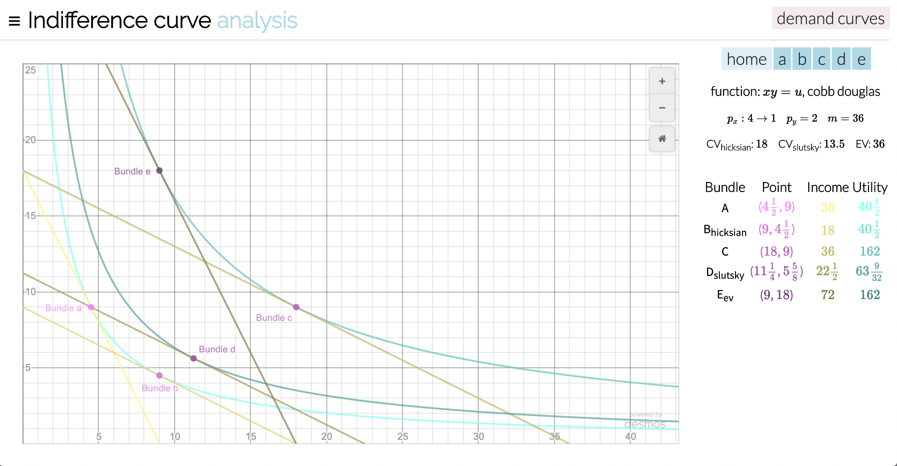Panels
The home panel on the right shows the simplified function and it's type, along with the parameters entered.
We can see the compensating variance for hicksian and slutsky substitution effects, as well as the equivalent variance.
Each of the bundles are listed with their respective parameters.
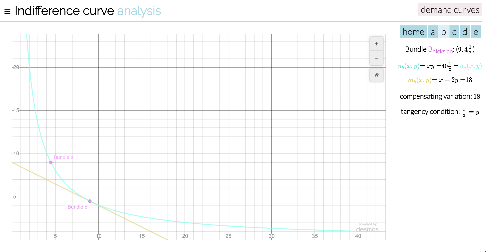Using the tabs on the top right, we can isolate specific bundles to declutter the graph.
For substitution effects like this bundle, we also see the original bundle on the graph.
In the panel, we have the bundle point, the utiltiy function and the budget line.
A useful feature is the listed tangency condition, which should help you calculate this curve yourself.
Fractions/Decimals
The program will automatically parse simple values into fractions.
The fractional values can be plugged back into equations without a loss of precision, such as 1/3.
If there is a fractional value, you can click on it to convert it back into a decimal.
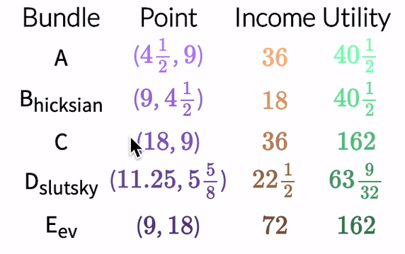You can force all values to be decimal with this control
Animations
You can enable animations to visualise how the substitution effects work by enabling them.
It will then show the path that the curves take to reach their constraints and optima.
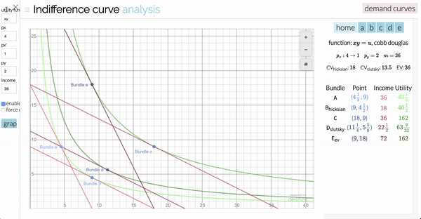Desmos Graph
Desmos graphs allow for panning and zooming in to the graph.
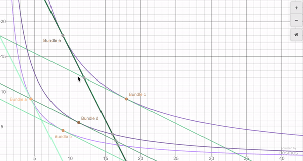On non-complex curves, desmos will allow you to interact with the intersection points and move along the curve
After zooming and panning, you can press the home button to return to the default view.
Examples
Cobb Douglas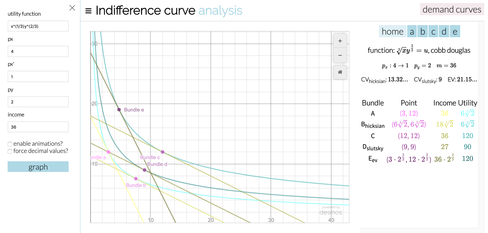 |
Substitutes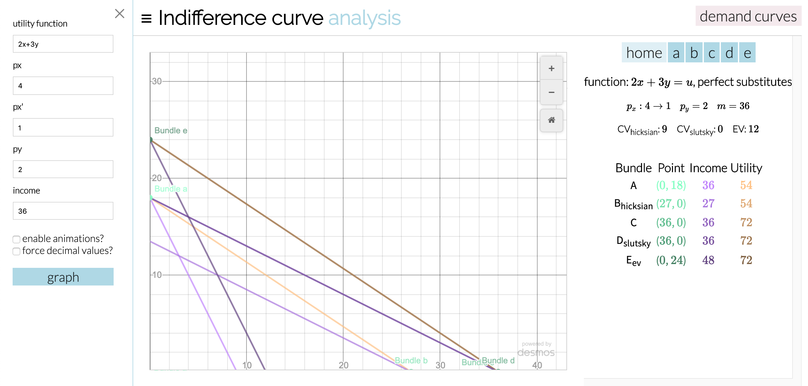 |
Complements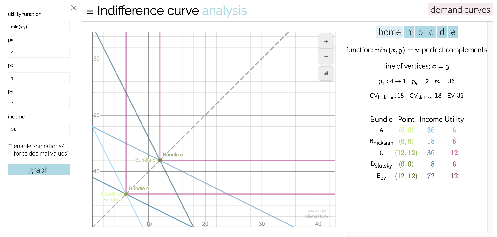 |
Max function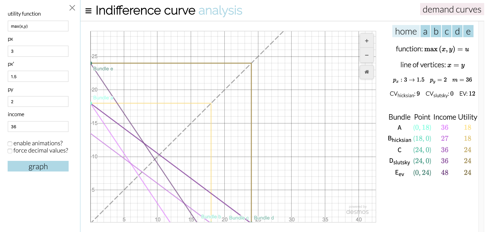 |
Complements with arguments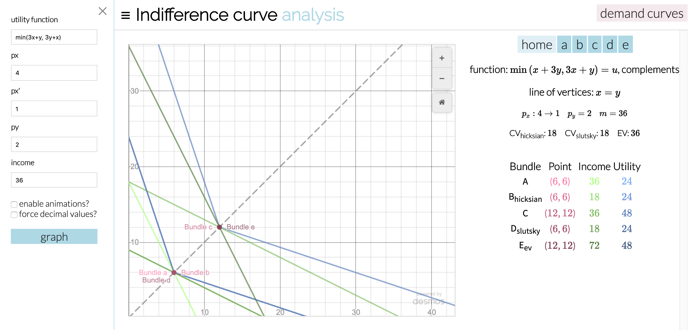 |
Max function with arguments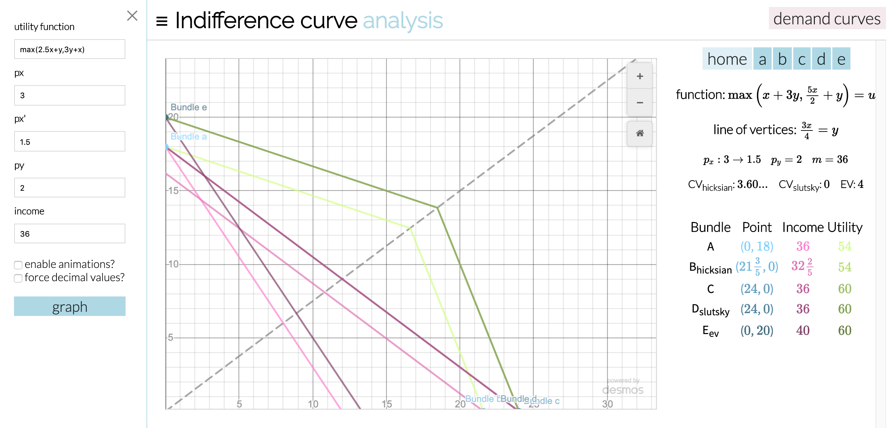 |
Polynomial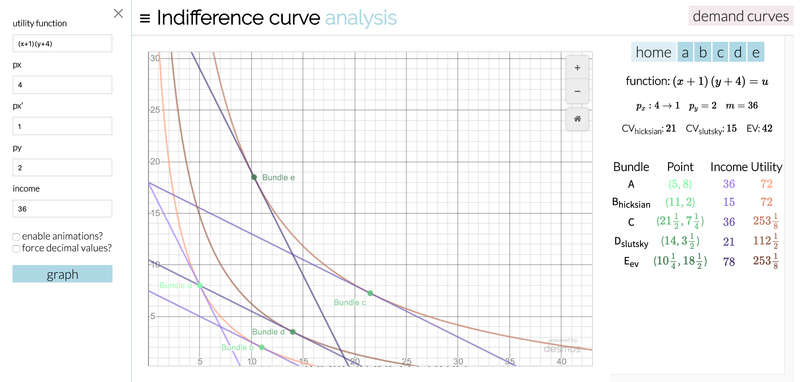 |
Price of x ~ f(x)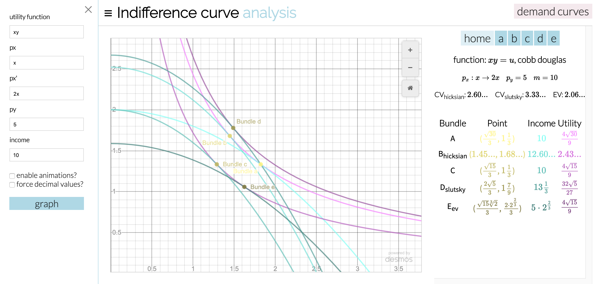 |
Demand Curves
You can view the demand curves by clicking the demand curves button.
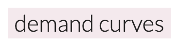Cobb Douglas
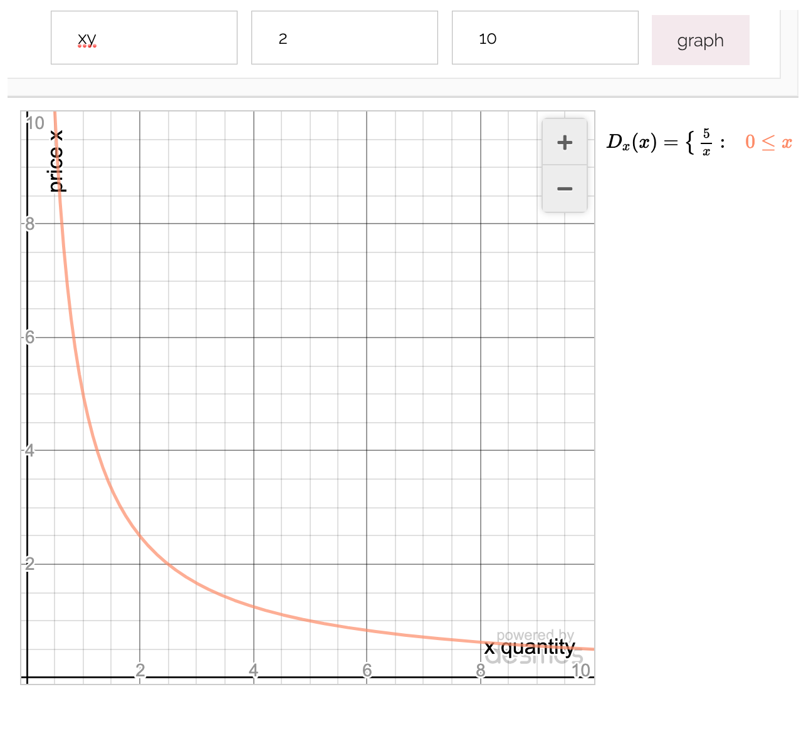Substitutes
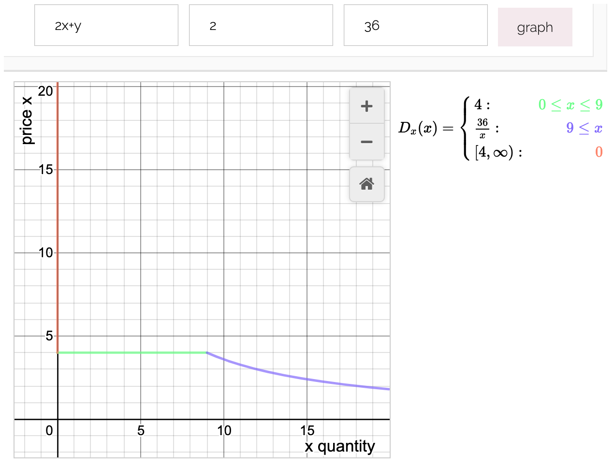Complements
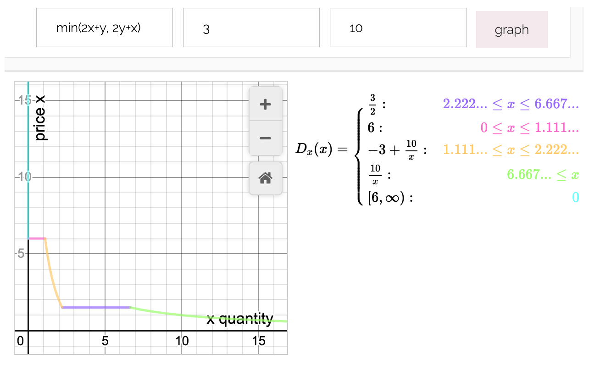Sometimes, functions have no points of interest or intercepts, so it can be hard to programmatically find a view.
In this case, you'll have to zoom out to manually find the function.
Thanks
This project was a multi-disciplinary effort of dedicated people
Professor Bailey
Professor Bailey allowed me to take up the project, and met up with me many times to help shape the application.
Special thanks to Bailey for allowing me to do this project.
He also taught me microeconomics in the first place (eco100 and eco200).
Ilir Dema
Ilir approved the project as a csc429 project, spending a lot of his free time meeting with me.
He also helped me code review, and helped with his connections to UTM servers and the Quercus team.
He went above and beyond his responsibilities as a csc429 supervisor to meet weekly to help me.
Andrew Wang
Andrew Wang is the systems administrator for UTM. He does an amazing job of maintaining UTM's server, and is always willing to accomodate for student projects.
He provided me with a ton of resources to help launch this app, including test servers, including test servers, installing different technologies and providing an ssl certificate.
In addition, he fielded all of my questions in a timely matter and helped me debug. Special thanks to him.
This https server mcsapps.utm.utoronto.ca server is his domain.
UTM Quercus Team
Special thanks to the UTM Quercus team for giving me a Quercus sandbox to test functionality with.